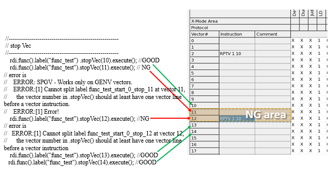

rdi.func().stopVec()
Inserts STOP in user pattern.
In the emap() class, startVec() and
stopVec() can be used to create a pattern which begins with the
startVec() line and ends at the stopVec() line. From the new
partial pattern, the results of EMAP actions can be retrieved.
Restriction
There is a restriction on those specified vector lines who
are near a sequencer instruction in the test pattern. That is, the vector line specified in
stopVec() should never contain a sequencer instruction, and it should never
immediately precede a vector line which contains a sequencer instruction. See the figure
below.

This restriction is printed out in the Report window when the test is executed.
Syntax
rdi.func().stopVec(int vec);
Parameter |
Description |
|---|---|
vec |
Vector line |
Examples
Example 1
rdi.func().label("label").stopVec(vec).execute();Example 2
RDI_BEGIN();
rdi.emap("id").label("abc").pin("A")
.startVec(10).stopVec(30)
.failCout(5,10).FFC(5).execute();
RDI_END();
...
rdi.id("id").getFailCout();
rdi.id("id").getFFC();In this example, a new pattern abc_START_10_STOP_30 will be generated. The FFC(5) means that the start cycle 5 is in the new generated pattern.
Functional changes
- Introduced in SmartRDI 2.3.1
- SmartRDI 7.6.0: startVec() and stopVec() support the emap() class.